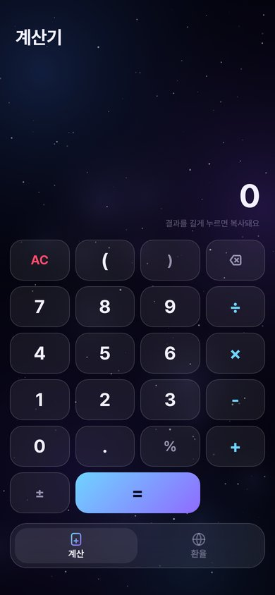
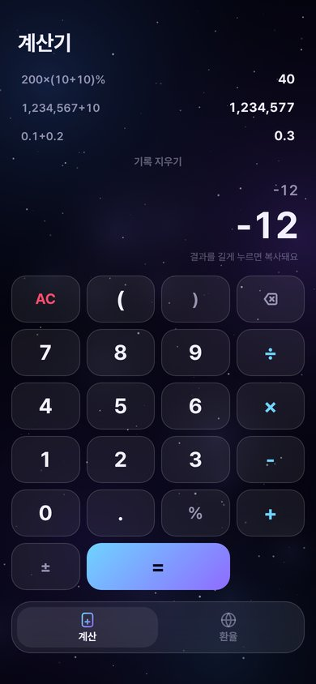
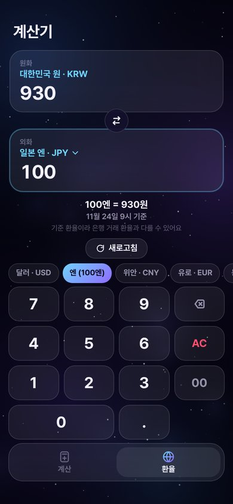
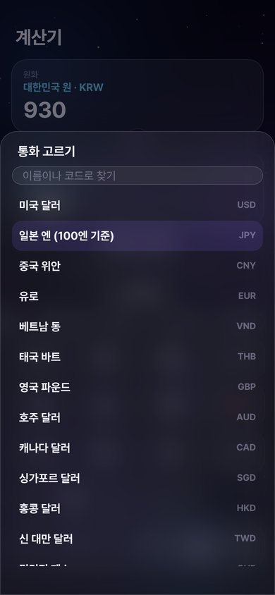
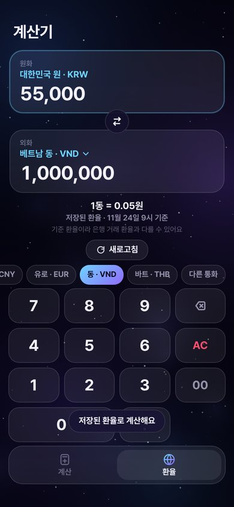

뉴니버스 계산기 v1 (시험판)
버전 1-test · 뉴니버스 고정 서명(런처·전화·문자와 같은 서명) · 따로 까는 앱 · 권한은 인터넷 하나(환율)
내려받기 · 뉴니버스 계산기 v1 (약 0.10MB)
들어간 것
- 계산: 더하기 · 빼기 · 곱하기 · 나누기, 괄호, %, ±, 모두 지우기(AC)와 한 칸 지우기. 식과 결과를 함께 보여 주고, 천 단위에는 쉼표를 찍어요.
- 계산 기록: 계산한 식이 위에 쌓여요. 한 줄을 누르면 그 결과를 다시 쓸 수 있고, '기록 지우기'로 비울 수 있어요.
- 길게 눌러 복사: 결과를 길게 누르면 복사돼요.
- 환율: 원화와 외화를 서로 바꿔 계산해요. 기본 통화는 달러(USD), 엔(JPY, 100엔 기준), 위안(CNY), 유로(EUR), 동(VND), 바트(THB)이고, '다른 통화'에서 더 고를 수 있어요.
- 화면에 기준 시각(예: 11월 24일 9시 기준)과 '기준 환율이라 은행 거래 환율과 다를 수 있어요'를 보여 줘요. 새로고침 단추로 다시 받을 수 있어요.
- 마지막으로 받은 환율은 폰에 저장해 두어, 인터넷이 없어도 그 값으로 계산해요. 그때는 '저장된 환율'이라고 표시돼요.
환율은 하루 한 번 정도 갱신되는 공개 기준 환율이에요(출처: open.er-api.com, 받지 못하면 currency-api). 은행 창구나 카드 결제 때 쓰는 환율과는 다를 수 있어요. 여행·해외 결제 금액을 가늠할 때 쓰기 좋아요. 계산 기록과 입력은 폰 밖으로 나가지 않아요.
1. 설치하기
- 이 폰의 크롬에서 위 내려받기 → 내 파일 › 다운로드 › newniverse-calc-v1-test.apk → (출처 허용) → 설치.
- 앱 목록에서 뉴니버스 계산기를 열어 쓰세요. 따로 허용할 권한 창은 없어요.
화면






화면의 환율 숫자는 예시(또는 받은 시각의 기준 환율)예요.